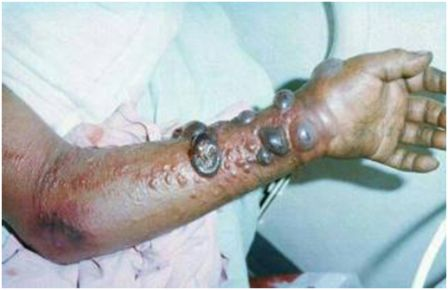
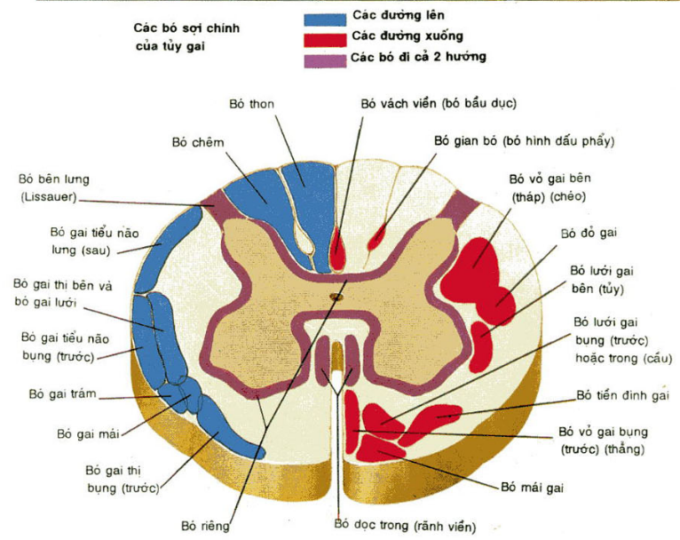

Những dấu hiệu nhận biết và triệu chứng của bệnh do virus Ebola

Con đường lây truyền của virut Ebola sang người
Nhiễm Ebola là một tình trạng cấp tính, do đó không có tình trạng người lành mang virus.
Virus Ebola lây truyền từ động vật sang người khi tiếp xúc gần với máu, chất tiết của động vật bị nhiễm. Tại châu Phi, virus lây truyền khi người lành tiếp xúc với các động vật như tinh tinh, gollzia, dơi ăn quả, khỉ, linh dương và nhím ốm, chết hoặc các động vật trong rừng nhiệt đới.
Virus Ebola lây truyền từ người sang người do tiếp xúc trực tiếp với máu, các chất tiết của cơ thể (phân, nước tiểu, nước bọt, tinh dịch) của người mắc bệnh...
Xem thêm
ĐAU ĐẦU phần I (MIGRAINE part I)- Ths.Bs. Trần Văn Tú (theo Harrison's Practice)
Định nghĩa
Là một hội chứng đau đầu mức độ nặng, thường gặp, lành tính và tái phát có thể được kèm theo bởi sợ ánh sáng, sợ âm thanh, buồn nôn, nôn ói và các triệu chứng rối loạn chức năng thần kinh khác.Các phân nhóm của migraine bao gồm:
Migraine không có tiền triệu (migraine thông thường)
Migraine có tiền triệu (migraine kinh điển)
Migraine võng mạc...
Nguồn Thông Tin
Xem thêm
ĐAU ĐẦU phần II (MIGRAINE part II) - Ths.Bs. Trần Văn Tú (theo Harrison's Practice)
Tiếp cận điều trị
Giáo dục bệnh nhân là một phần quan trọng trong điều trị migraine Giúp bệnh nhân hiểu được migraine có thể được thay đổi và được kiểm soát bởi thay đổi lối sống và thuốc nhưng có thể không hết hẳn được. Quan trọng cho các nhà lâm sàng để đánh giá phạm vi sự tàn tật của bệnh nhân trong việc chọn lựa các chế độ điều trị thuốc. Thang điểm đánh giá tàn tật migraine là một công cụ chuẩn tốt có ích. Các tiếp cận không dùng thuốc Bệnh nhân nên xác định và tránh các yếu tố kích thích gây ra cơn. Xem xét bổ sung và thay đổi điều trị như giúp quản lý stress như là một bổ sung thêm cho điều trị thuốc.Nguồn Thông Tin
Xem thêm
NHỒI MÁU TUỶ - Ths.Bs. Trần Văn Tú (Theo Harrison's Practice)

Cơ bản
Nhồi máu tuỷ có thể là kết quả từ nghẽn mạch huyết khối của động mạch tuỷ sống trước hay tuỷ sống sau hay từ giảm tưới máu (như thứ phát từ hạ huyết áp của những động mạch này).
Là một trong những nguyên nhân của bệnh tuỷ cắt ngang cấp tính
Dịch tễ học
Tần suất lưu hành
Hiếm gặp; tỉ lệ mắc bệnh chính xác không biết
Chiếm khoảng ~1% đột quỵ
Nguồn Thông Tin